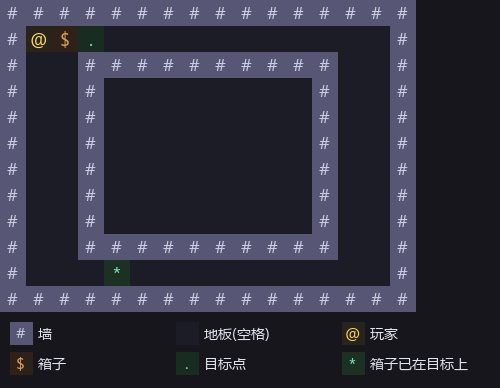
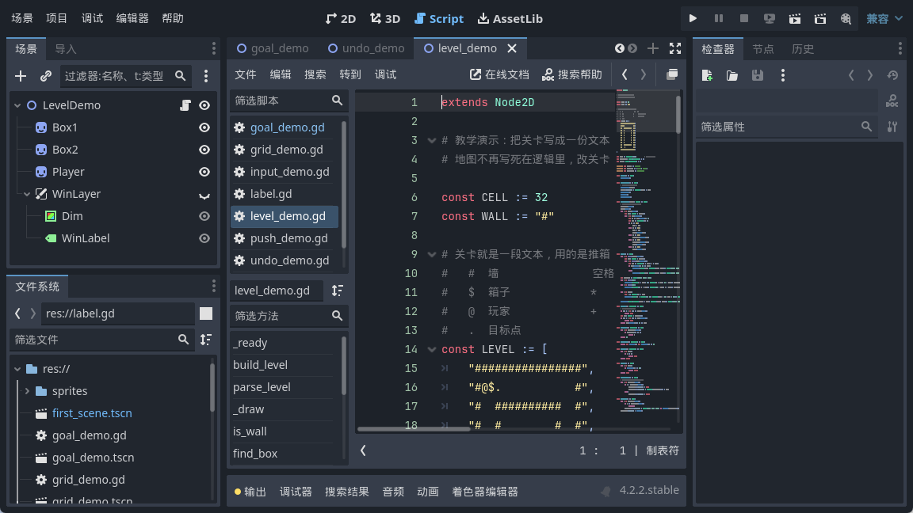
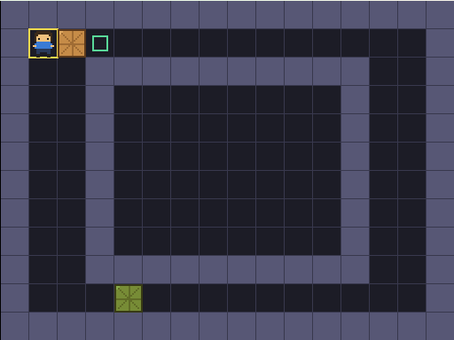
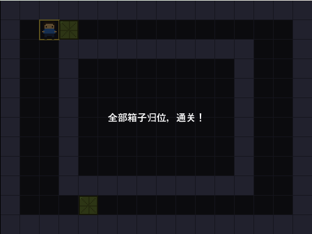
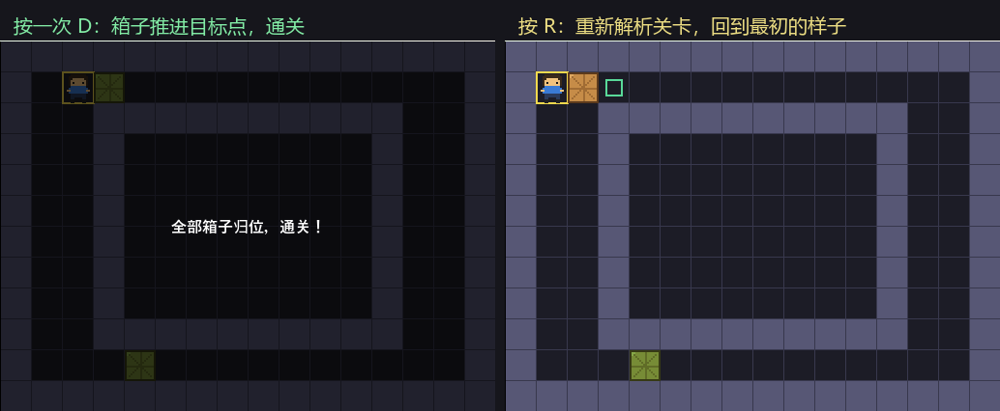

大家好，我是「山岚的运维笔记」。
前面十一篇，地图一直写死喺代码入面，玩家同箱子喺边都系我手填嘅坐标。想加一关，就要将嗰几个数组再抄一次，改个数仲要数格子。
今天把地图抽成一份纯文本。改关卡从此只是改几行字，代码一行不用动。

符号一共七个，是推箱子社区通用的那套，网上现成的关卡文件直接能拿来用。
有两点要留神。
第一，地板是空格，不是点。我一开始顺手拿点号当地板，跟目标点抢了符号，解析出来一团乱。空格睇落别扭，不过佢最唔容易同其他字符打架。
第二，一个字符能表达两件事。「箱子在目标点上」这个符号既是「这里有箱子」又是「这里是目标点」，玩家站在目标点上也是同理。这两个符号看着多余，其实省了大麻烦——不然你得再开一个数组，专门记哪个箱子开局就站在目标上。
两层循环，外层走行、内层走列，看到什么字符就往对应的数组里塞。没有花哨的东西，就是老实遍历。

开头那两行清空很重要，是为了让这个函数能反复调用——重开一关就是重新解析一遍，不清空的话箱子会越攒越多。
墙我没解析成数组，判定的时候直接回文本里查。地图文本本身就是一份完整的地图数据，没必要再抄一份到别的数组里。
多一份数据，就多一处对唔上嘅风险。

解析完，玩家喺边、箱子喺边、目标点喺边，全部有齐。剩低嘅就系将精灵摆到位、刷一次颜色、嗌一声重画。
顺带说一个细节：箱子精灵我是事先在场景里摆好几个的，关卡里箱子少就把多余的藏起来。这叫对象池。关卡里箱子数量不定，总不能每次都现场创建节点，先备几个、用多少显多少，正经项目里基本都这么干。
玩家在左上角，箱子一个在右边、一个已经站在目标点上（绿的）。
按一次往右，箱子推进目标点，两个都满了，通关。


重开做的事就是再解析一遍关卡文本。重开后的画面跟开局那张，我比对过，像素级一模一样。说明解析系干净嘅，冇留低上一局嘅手尾。
这一段四篇，我们干了这些事：推箱子要看两格；胜利是状态不是事件，每走一步都得重新问；撤销存状态不存动作，数组是引用记得复制；地图抽成文本，改关卡不动代码。
现在这个游戏能推、能撤、能赢，关卡还是数据驱动的了。
下一阶段把它做成一个「真的游戏」：多关卡、存档解锁、选关界面、主菜单。第一步是多关卡加载与切换——既然关卡已经是文本了，多备几份轮着读就是了。
地图搬出代码喇，值得一个点赞同在看；关注「山岚的运维笔记」，关卡从此改文本就得。评论区见。
（配套工程在 GitHub 的 Boxman 仓库 tutorial 分支，每篇一个进度 tag，随时能下到对应版本。）